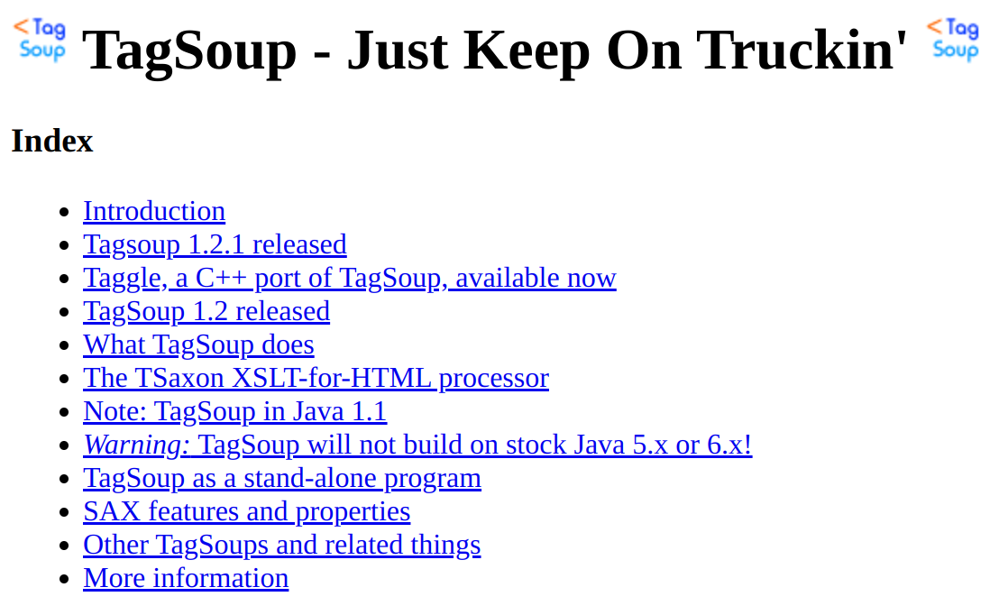
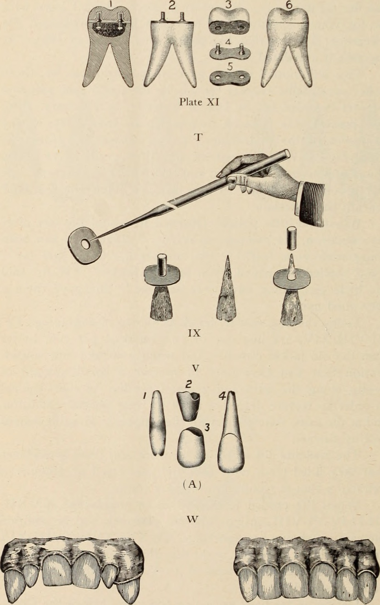

Migrating DocBook to Uncharted Waters
ari.nordstrom@gmail.com
This Should Be Easy
- Clean up and convert DocBook 4.0 to 4.3
- Convert the DocBook 4.3 to (X)HTML
Pipelines!
4.0 to 4.3?
UTF-8 encoding, really, plus a few tweaks
4.3 to HTML?
- Pass through (a lot of) Math ML
- Insert metadata for publishing
- Oh, and an HTML conversion
Pipelines?
<manifest
xmlns="http://www.corbas.co.uk/ns/transforms/manifest"
xml:base=".">
<group
description="An example XSLT pipeline manifest"
xml:base="../xslt/">
<item href="step1.xsl" description="To element one">
<meta name="param1" value="value1"/>
</item>
<item href="step2.xsl" description="To element two"/>
<item href="step3.xsl" description="To element three">
<meta name="param3A" value="value3A"/>
<meta name="param3B" value="value3B"/>
</item>
<item href="step4.xsl" description="To element four"/>
</group>
</manifest>
Again, Easy. Right?
Cleanup

Game Plan
- Normalise
- Tweak
- Encode
Normalisation
Pull in all XInclude links
<xi:include href="section1.xml"/>
List XInclude targets in an exclude filter:
<p:option
name="exclude-filter"
select="'(section1.xml|section2.xml|section3.xml)'"/>
(Don't process fragments already pulled in)
Windchill File Protocol
x-wc://file=0000079863.xml
Easy enough to fix, but then I discovered why
File Naming
01234.xml
My filename.xml
Multiple whitespaces in filenames.xml
Ampersands? Yes & No.xml
Square brackets [2].xml
...
My XProc exclude filters are regular expressions
File Renaming Step
<sg:rename name="rename">
<p:with-option
name="input-dir"
select="$input-base-uri"/>
<p:with-option
name="output-dir"
select="concat($tmp-dir,'/names-fixed')"/>
<p:with-option
name="reports-dir"
select="$reports-dir"/>
<p:with-option
name="tmp-dir"
select="$tmp-dir"/>
</sg:rename>
- Rename files
- Rename XInclude hrefs
Unicode and UTF-8
All we need is...
<xsl:output method="xml" indent="yes" encoding="UTF-8"/>
Provided we have...
<!DOCTYPE set
PUBLIC "-//Arbortext//DTD DocBook XML V4.0 + MathML//EN"
"axdocbook_math.dtd">
Remember Those XIncludes
<!-- Fragment document type declaration subset:
Arbortext, Inc., 1988-2017, v.4002
<!DOCTYPE set PUBLIC "-//Arbortext//DTD DocBook XML V4.0 + MathML//EN"
"axdocbook_math.dtd">
-->
<?Pub EntList alpha bull copy rArr sect trade ordm ohm mu j0 omega
eacute?>
<?Pub Inc?>
<section id="sectionFEBB4816" vendor="0000081446">
...
</section>
TagSoup
Add DOCTYPE
<java
jar="lib/tagsoup-1.2.1.jar"
fork="true"
output="${base.intermediate}/${local.path}"
error="${base.reports}/err.txt">
<arg value="--doctype-public=-//Arbortext//DTD DocBook XML V4.0 + MathML//EN"/>
<arg value="--doctype-system=axdocbook_math.dtd"/>
<arg value="--lexical"/>
<arg value="${local.file}"/>
</java>
Except
We don't actually need you to normalise the XIncludes.
DocBook Preprocessing & HTML Conversion
Initial Game Plan
- Preprocess
- Insert metadata
- Run (tweaked) OOTB DocBook to HTML
How hard can it be?
Remember Those XIncludes, Pt 2
- Metadata inserts depend on book type
- Different book types => files split differently
- No way to find out context in a fragment - need the whole book
- Also: the source fragments were not always correctly split!
We need to normalise after all!
Breaking Up Is Never Easy
New game plan:
- Normalise
- Determine where to split (insert
split="true") - depends on book type and context - Calculate fragment filenames - depends on book type and context
- Preprocess and insert metadata
- Run (tweaked) OOTB DocBook to HTML
Assessment Metadata
<qandaentry split="true" type="assessment">
<xhtml:section class="ktp-question-meta">
<xhtml:section
property="ktp:metadata"
class="ktp-meta">
<xhtml:span
property="atom:content-item-name"
class="ktp-meta"
data-value="0000088017"/>
</xhtml:section>
<xhtml:section
property="ktp:tags"
class="ktp-meta">
<xhtml:span
property="ktp:interactionType"
class="ktp-meta">single-select</xhtml:span>
</xhtml:section>
</xhtml:section>
...
</qandaentry>
Webbook (Chapter) Metadata
<chapter label="42" vendor="0000088016">
<title>Fasteners</title>
<xhtml:section class="ktp-document-meta" keep="copy">
<xhtml:section property="ktp:metadata" class="ktp-meta">
<xhtml:span
property="atom:content-item-name"
class="ktp-meta"
data-value="0000088016"></xhtml:span>
<xhtml:span property="atom:title">
<xhtml:span class="chapter-number">42</xhtml:span>
<xhtml:span>Fasteners</xhtml:span>
</xhtml:span>
</xhtml:section>
<xhtml:section property="ktp:tags" class="ktp-meta">
<xhtml:span property="atom:tag" class="ktp-meta">ppi</xhtml:span>
<xhtml:span property="atom:tag" class="ktp-meta">remediation</xhtml:span>
<xhtml:span property="atom:tag" class="ktp-meta">not_scorable</xhtml:span>
<xhtml:span property="atom:tag" class="ktp-meta">resource</xhtml:span>
<xhtml:span property="atom:tag" class="ktp-meta">article</xhtml:span>
</xhtml:section>
</xhtml:section>
<xhtml:section property="ktp:document-section"
typeof="ktp:instruction"
class="ktp-document-section"
data-title="Fasteners">
...
</xhtml:section>
</chapter>
Explanation Metadata
<answer>
<xhtml:section
property="ktp:explanation"
typeof="ktp:Explanation"
class="ktp-explanation">
<xhtml:section
property="ktp:explanation-section"
typeof="ktp:feedback"
class="ktp-explanation-section"
data-title="Solution">
...
</xhtml:section>
</xhtml:section>
</answer>
Metadata Steps
<group description="Add metadata" xml:base="../xslt/db2html/">
<item
href="section-metadata.xsl"
description="Add metadata to chapter/section"/>
<item
href="webbook-metadata-insert.xsl"
description="Insert web book metadata"/>
<item
href="qandaentry-metadata-insert.xsl"
description="Insert qandaentry metadata"/>
<item
href="flashcard-wrappers.xsl"
description="Wrap flashcard components in metadata sections"/>
<item
href="question-options.xsl"
description="Insert question option metadata"/>
<item
href="question-stem.xsl"
description="Insert question stem wrapper"/>
<item
href="explanation-metadata.xsl"
description="Wrap answer content in explanation metadata"/>
</group>
Various Tweaks
- Footnotes
- Xref labels
- Some grouping
- Image ref fixes
- ...
But also...
Preconverting
<question id="questionFEBB06-001">
<xhtml:section
class="ktp-question-stem"
keep="true">
<para>Four fair coins are tossed at once.
What is the probability of obtaining three heads and one tail?</para>
</xhtml:section>
<orderedlist
numeration="upperalpha"
inheritnum="ignore"
continuation="restarts"
class="ktp-answer-set">
<listitem
role="correct"
property="ktp:answer"
typeof="ktp:AnswerCorrect">
<para>1/4</para>
</listitem>
<listitem property="ktp:answer" typeof="ktp:Answer">
<para>3/8</para>
</listitem>
<listitem property="ktp:answer" typeof="ktp:Answer">
<para>1/2</para>
</listitem>
<listitem property="ktp:answer" typeof="ktp:Answer">
<para>3/4</para>
</listitem>
</orderedlist>
</question>
Preconverting
<question id="questionFEBB06-001">
<xhtml:section
class="ktp-question-stem"
keep="true">
<xhtml:p
keep="true">Four fair coins are tossed at once.
What is the probability of obtaining three heads and one tail?</xhtml:p>
</xhtml:section>
<xhtml:ol
numeration="upperalpha"
inheritnum="ignore"
continuation="restarts"
class="ktp-answer-set"
keep="true">
<xhtml:li
property="ktp:answer"
typeof="ktp:AnswerCorrect"
keep="true">
<xhtml:p keep="true">1/4</xhtml:p>
</xhtml:li>
<xhtml:li property="ktp:answer" typeof="ktp:Answer" keep="true">
<xhtml:p keep="true">3/8</xhtml:p>
</xhtml:li>
<xhtml:li property="ktp:answer" typeof="ktp:Answer" keep="true">
<xhtml:p keep="true">1/2</xhtml:p>
</xhtml:li>
<xhtml:li property="ktp:answer" typeof="ktp:Answer" keep="true">
<xhtml:p keep="true">3/4</xhtml:p>
</xhtml:li>
</xhtml:ol>
</question>
Sometimes It's Just Easier to Preconvert
<para>See <xhtml:a keep="true" href="#ideq">Equation 45.1</xhtml:a></para>
<xhtml:section class="footnotes" id="footnotes" keep="true">
<xhtml:a name="footnotes" keep="true"/>
<xhtml:h6 keep="true">Footnotes</xhtml:h6>
<xhtml:ol keep="true">
<xhtml:li id="fn-15-1" keep="true">
<para>with a footnote</para>
</xhtml:li>
</xhtml:ol>
</xhtml:section>
It Became a Habit
keep="true"
keep="copy"
Output
- XSLT pipeline output is a normalised DocBook-is file
-
Split into fragments based on
split="true"Filename determined during preprocess
xslTNG
In Theory
xslTNG:
- Entry XSLT importing
docbook.xsl - Entry module tweaks
- Run against split output
In Practice
- xslTNG input lives in a namespace, DB 4.3 does not
-
xslTNG produces a default output
Endlessly customisable, not always obviously so
- More preconvert tweaks
But Also
-
Post-xslTNG required additional tweaks
(such as: HTML wrappers went missing and I couldn't understand why)
- A preconvert/postprocess combo became easier (and easier)
- Late-breaking tweaks from the client easier to do in postprocess
All in All...
In Hindsight...
- I should have done XProc 3.0
- Maybe xslTNG was overkill...?
- Debugging is easy!
- New features are easy!